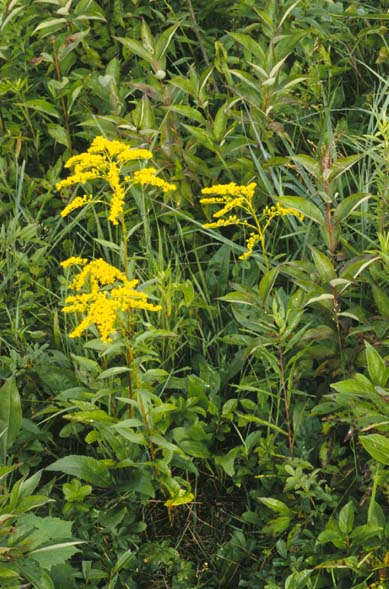

Solidago Juncea
Family: Asteraceae
Early Goldenrod
Swink/Wilhelm # 5
 Click to view larger photo
Click to view larger photo

FLOWERING: July
SEED TIMING: Mid-September to mid-October
HABITAT: Dry soil, open woods and prairies
DIAGNOSTIC FEATURES: 1.5 to 3 feet high. Short goldenrod with plumed, nodding inflorescence. Note the tiny winglike leaflets in the axils of the slim toothless upper leaves. Lower leaves broad, toothed and tapering into a long margined stalk. Stem and leaves smooth.
TO PICK: Earliest of goldenrods to ripen. Seedhead opens with a fluffy white papus. If fully opened can be stripped off the stem. Can be picked if at least some heads are fluffed out by taking entire spike. Use clippers if head does not snap off easily to avoid pulling up plant. Spread out to dry and fluff; then may be stored in paper bag until ready to process.